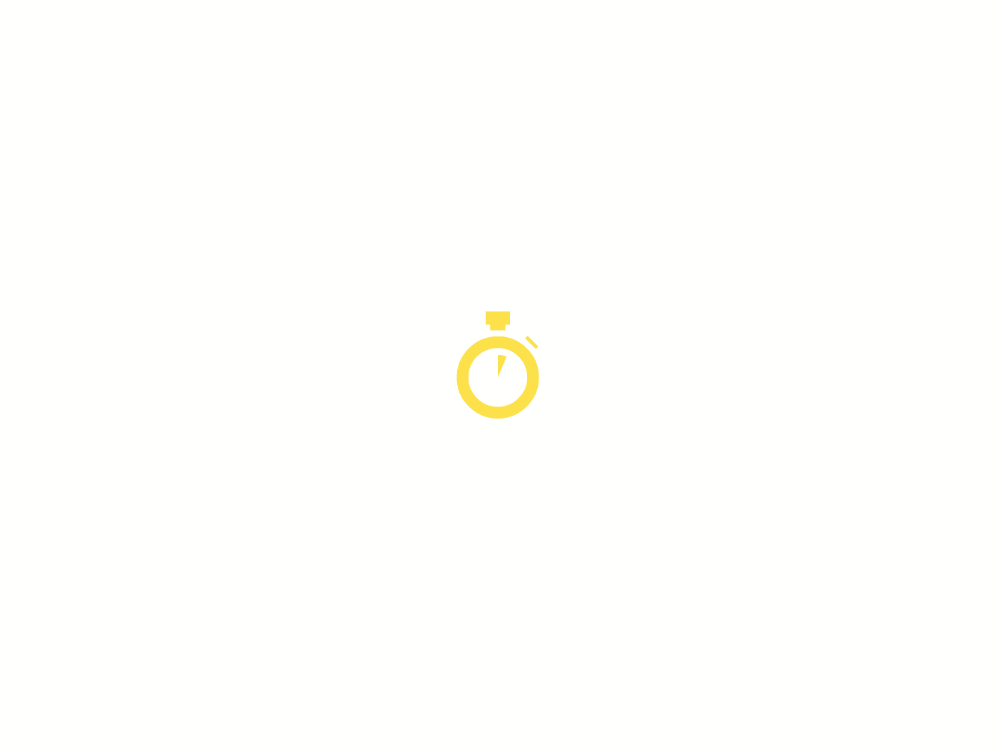

<ion-header>
  <ion-toolbar>
    <ion-title>
      Favorite 
    </ion-title>
  </ion-toolbar>
</ion-header>

<ion-content>

  


  <ion-list *ngIf="loading==false">
    <ion-item *ngFor="let r of favourites" detail>

      <ion-icon *ngIf="!isInFavourite(r)" name="heart" class="heartNoFav" (click)="addFavourite(r)"></ion-icon>
      <ion-icon *ngIf="isInFavourite(r)" name="heart" class="heartFav" (click)="removeFavourite(r)"></ion-icon>

      <ion-label (click)="recipeClick(r)" >{{r.titolo}}</ion-label>
    </ion-item>
  </ion-list>

  <ion-fab vertical="bottom" horizontal="end" slot="fixed">
    <ion-fab-button color="warning" (click)="clearAll()">
      <ion-icon name="trash"></ion-icon>
    </ion-fab-button>
  </ion-fab>

</ion-content>
